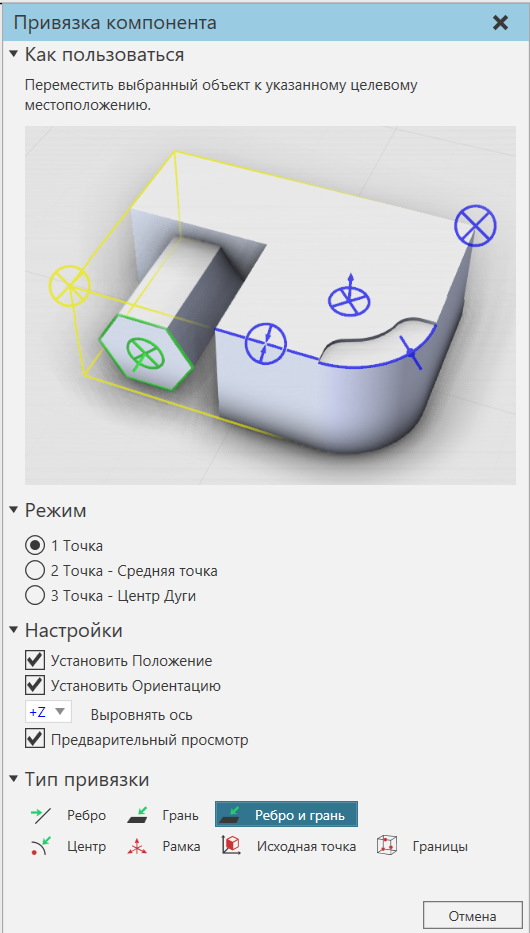

Привязка компонентов |
|
Выбранный компонент может быть привязан к местоположению относительно других компонентов в трехмерном мире. 1.В 3D-мире выберите компоненты, которые вы хотите переместить. 2.На вкладке Главная, в группе Инструменты, нажмите Привязка.  3.На панели задач Привязка компонента в разделе Режим сделайте одно из следующих действий: ·Чтобы привязать выбранное к указанному местоположению, нажмите 1 точка. ·Чтобы привязать выбранное к месту посередине между двумя выбранными местами, щелкните 2 точки. ·Чтобы привязать выбранное к месту с одинаковым радиусом из трех выбранных мест, щелкните 3 точки — центр дуги. 4.В разделе Настройки выполните одно или несколько из следующих действий.: ·Чтобы привязать выбранное к положению местоположения, поставьте галочку в Установить положение. ·Чтобы привязать выбранное к той же ориентации местоположения, поставьте галочку в Установить ориентацию. ·Чтобы определить ось выравнивания для привязки выбранного к местоположению, щелкните стрелку Выровнять ось, а затем выберите ось и направление, которые вы хотите использовать. ·Чтобы просмотреть положение и/или ориентацию выделения в определенном месте, поставьте галочку в Предварительный просмотр. 5.В разделе Тип привязки, сделайте одно из следующих действий: ·Чтобы привязать выделение к опорной точке, щелкните Рамка. ·Чтобы привязать выделение к точке на кромке и/или грани, щелкните Ребро, Грань или Ребро и грань. ·Чтобы привязать выделение к исходной точке компонента, нажмите кнопку Исходная точка. ·Чтобы привязать выделение к угловой точке ограничивающей рамки компонента, щелкните Границы. Важно: Если вы выбираете два или более местоположения, вы можете изменить параметр Тип привязки перед выбором каждого местоположения. 6.В трехмерном мире наведите курсор на место, чтобы просмотреть эффект, который действие привязки окажет на ваш выбор. 7.В зависимости от настройки режима щелкните одно или несколько местоположений. Команда Привязка автоматически закроется, как только вы завершите все действие или щелкнете пустое место в трехмерном мире или нажмете ESC. 8.Выполните одно или несколько из следующих действий: ·Если вы хотите отменить команду привязки, нажмите ESC или на панели задач привязки компонентов нажмите Отмена. ·Если вы хотите отменить эффект действия привязки, на ПБД нажмите Отменить. ·Если вы хотите вернуть эффект отмененного действия привязки, на ПБД нажмите кнопку Вернуть. |